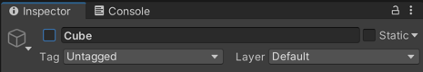

게임 오브젝트와 라이프사이클
게임 오브젝트
게임 오브젝트란?
Hierarchy 윈도우에 있는 다양한 물체들이 전부 게임 오브젝트 입니다.
게임 오브젝트 는 이름과 Transform 을 포함하여 다양한 컴포넌트 를 가지고 있습니다.
SetActive
 Inspector 윈도우의 이름 옆에 체크박스를 해제하면, 게임 오브젝트 가 비활성화 됩니다.
Hierarchy 윈도우에서도 짙은 회색으로 보이면서 비활성화 됩니다.
다시 체크로 변경하여, 활성화 상태로 바꿔줍니다.
- import { ZepetoScriptBehaviour } from 'ZEPETO.Script' export default class NewScript extends ZepetoScriptBehaviour { Start() { this.gameObject.SetActive(false); } }
스크립트에서 게임 오브젝트 를 제어하려면, this.gameObject (프로퍼티) 로 접근하면 됩니다.
SetActive (메서드) 를 사용하면 해당 오브젝트를 활성화/비활성화 할 수 있습니다.
실행 시, 코드가 실행되어 해당 오브젝트가 비활성화 됩니다.
라이프사이클
유니티의 게임 오브젝트는 생성, 제거 등의 여러 과정을 라이프사이클 이라고 합니다.
해당 라이프 사이클이 되면, 게임 오브젝트의 스크립트에 사전 정의된 메서드 가 자동으로 호출됩니다.
게임 오브젝트의 사전 정의된 메서드에는 여러가지가 있으며, 먼저 Start, Update 에 대해 알아보겠습니다.
Start
- import { ZepetoScriptBehaviour } from 'ZEPETO.Script' export default class NewScript extends ZepetoScriptBehaviour { Start() { console.log("Start!!!"); } }
Start 메서드는 유니티가 실행되면, 바로 호출됩니다.
게임 오브젝트를 초기화하는 용도로 주로 사용됩니다.
스크립트를 가지고 있는 게임 오브젝트가 비활성화 상태로 유니티가 실행되면, Start 메서드는 호출되지 않습니다.
Update
- import { ZepetoScriptBehaviour } from 'ZEPETO.Script' export default class NewScript extends ZepetoScriptBehaviour { Start() { console.log("Start!!!"); } Update() { console.log("Update!!!"); } }
Update 메서드는 유니티가 실행되고, 매 프레임마다 호출됩니다.
매 프레임마다 호출되며, 다양한 로직에 사용될 수 있습니다.
deltaTime
- import { Time } from 'UnityEngine'; import { ZepetoScriptBehaviour } from 'ZEPETO.Script' export default class NewScript extends ZepetoScriptBehaviour { Start() { } Update() { console.log(`deltaTime: ${Time.deltaTime}`); } }
Time.deltaTime 은 마지막 프레임을 렌더링하는 동안 소요된 시간을 나타냅니다.
Update 가 한번 호출되는 간격과 동일하기 때문에 Update 와 함께 사용되는 경우가 많습니다.
- import { Time } from 'UnityEngine'; import { ZepetoScriptBehaviour } from 'ZEPETO.Script' export default class NewScript extends ZepetoScriptBehaviour { private timer: number = 0; Start() { } Update() { this.timer = this.timer + Time.deltaTime; console.log(`timer: ${this.timer}`); } }
Update 마다 Time.delta 을 프로퍼티에 합산해주면, 유니티가 실행되고 부터 지난 시간이 저장됩니다.
결과 출력.